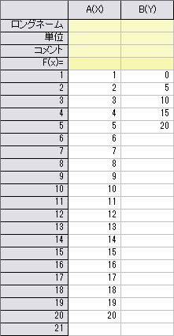
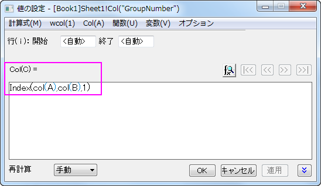
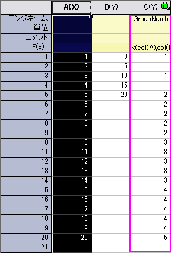
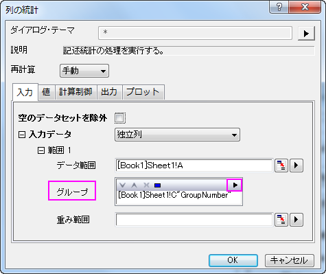
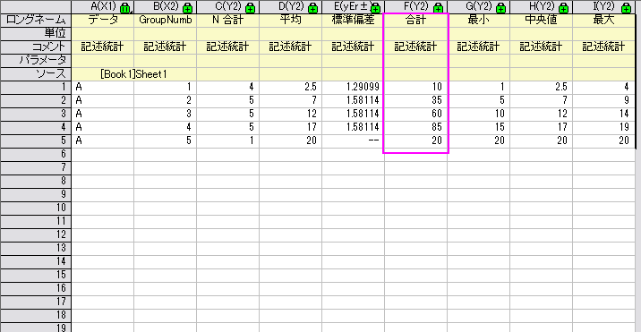

FAQ-837 ビンにデータをまとめ、それぞれのビンのデータを足し合わせる方法は？
how_to_group_data_into_bins_and_sum_up_the_data_of_each_bin_respectively
最終更新日:2016/07/05
グループ化してビンに入れたい場合や、それぞれのビンのデータを足し合わせるには、まずデータのグループ数を設定してグループ化し、グループで統計を行います。
1 から 20 の数字が 列A にあるとして、次のステップに進みます：
- 新しい列、列B を追加して、列B のビン最終値を入力します。
例： [0, 5), [5, 10), [10, 15) と [15, 20)のビンに次のデータをグループ化したい場合、列Bのそれぞれの行に
0、5、10、15 及び 20 を入力します。
- 
- 新しい列を 列C を追加し、その列のロングネームをGroupNumber にします。
- 列C をハイライト選択して右クリックし、開いたメニューの列値の設定…
を選択し、値の設定 ダイアログを開きます。
Index(col(A),col(B),1)
を 列の式 編集ボックスに入力します。
- 
- OK ボタンをクリックすると、グループ数が 列C
に表示されます。
この場合、グループ数１は、 このデータポイントが[0, 5)のビンに入っていることを示します。グループ数２はこのデータポイントが[5,
10) に入っていることを示します。
- 
- 列Aをハイライトして、メニューの統計： 記述統計：
列の統計 を選択し、列の統計 ダイアログを開きます。
- ダイアログのグループ アイテムの三角ボタンをクリックし、フライアウトメニューの列C を選択します。
- 
- OK ボタンをクリックします。作成されたDescStatsQuantities1
結果シートにそれぞれのビンの合計があります。
- 
キーワード:合計、Index、列値の設定、記述統計